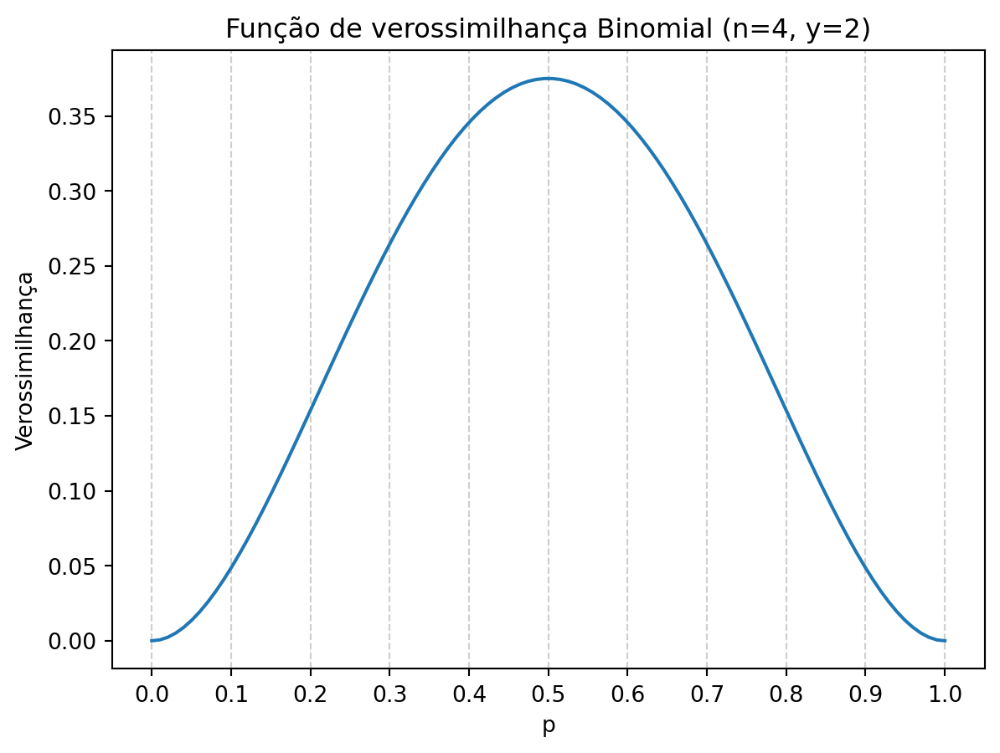

Construindo um modelo bayesiano
Verossimilhança e distribuição a priori
Construção de um modelo bayesiano, enfatizando a formulação de distribuições a priori e posterior.
Considere um globo representando o planeta Terra, pequeno o suficiente para caber em suas mãos. Seu objetivo é estimar a fração da superfície coberta por água. Para isso, você adota a seguinte estratégia: joga o globo para cima girando e, ao pegá-lo, registra se o ponto tocado pelo seu dedo indicador direito é água (🌊) ou terra (🏜️). Você repete esse procedimento algumas vezes, obtendo uma sequência de \(n\) observações.
Você faz quatro lançamentos do globo e conta quantos deles resultam em água. Um possível resultado seria \(🌊🌊🏜️🌊\), totalizando 3 observações de água e 1 de terra. Outro resultado possível é \(🏜️🏜️🌊🌊\), com 2 observações de água e 2 de terra. Para \(n = 4\) observações, existem 16 resultados possíveis (Tabela 1).
| Nº | Dados | Nº pontos na água | Proporção de pontos na água |
|---|---|---|---|
| 1 | 🏜️ 🏜️ 🏜️ 🏜️ | 0 | 0/4 = 0.00 |
| 2 | 🏜️ 🏜️ 🏜️ 🌊 | 1 | 1/4 = 0.25 |
| 3 | 🏜️ 🏜️ 🌊 🏜️ | 1 | 1/4 = 0.25 |
| 4 | 🏜️ 🌊 🏜️ 🏜️ | 1 | 1/4 = 0.25 |
| 5 | 🌊 🏜️ 🏜️ 🏜️ | 1 | 1/4 = 0.25 |
| 6 | 🏜️ 🏜️ 🌊 🌊 | 2 | 2/4 = 0.50 |
| 7 | 🏜️ 🌊 🏜️ 🌊 | 2 | 2/4 = 0.50 |
| 8 | 🏜️ 🌊 🌊 🏜️ | 2 | 2/4 = 0.50 |
| 9 | 🌊 🏜️ 🏜️ 🌊 | 2 | 2/4 = 0.50 |
| 10 | 🌊 🏜️ 🌊 🏜️ | 2 | 2/4 = 0.50 |
| 11 | 🌊 🌊 🏜️ 🏜️ | 2 | 2/4 = 0.50 |
| 12 | 🏜️ 🌊 🌊 🌊 | 3 | 3/4 = 0.75 |
| 13 | 🌊 🏜️ 🌊 🌊 | 3 | 3/4 = 0.75 |
| 14 | 🌊 🌊 🏜️ 🌊 | 3 | 3/4 = 0.75 |
| 15 | 🌊 🌊 🌊 🏜️ | 3 | 3/4 = 0.75 |
| 16 | 🌊 🌊 🌊 🌊 | 4 | 4/4 = 1.00 |
Observe que apenas um dos resultados contém 4 observações de terra e somente um contém 4 observações de água. Os demais são variações entre esses extremos.
Podemos reorganizar a tabela para evidenciar todas as combinações que levam ao mesmo número \(y_i\) de pontos em água:
| Nº pontos na água (\(y_i\)) | Dados | Nº de combinações |
|---|---|---|
| 0 | 🏜️ 🏜️ 🏜️ 🏜️ | 1 |
| 1 | 🏜️ 🏜️ 🏜️ 🌊 🏜️ 🌊 🏜️ 🏜️ 🏜️ 🏜️ 🌊 🏜️ 🌊 🏜️ 🏜️ 🏜️ |
4 |
| 2 | 🏜️ 🏜️ 🌊 🌊 🏜️ 🌊 🏜️ 🌊 🏜️ 🌊 🌊 🏜️ 🌊 🏜️ 🏜️ 🌊 🌊 🏜️ 🌊 🏜️ 🌊 🌊 🏜️ 🏜️ |
6 |
| 3 | 🏜️ 🌊 🌊 🌊 🌊 🏜️ 🌊 🌊 🌊 🌊 🏜️ 🌊 🌊 🌊 🌊 🏜️ |
4 |
| 4 | 🌊 🌊 🌊 🌊 | 1 |
Defina \(p\) como a probabilidade de observar água e \(1 - p\) como a probabilidade de observar terra após cada lançamento do globo.
A última linha da Tabela 2 (🌊🌊🌊🌊) tem probabilidade: \[P(4) = p \times p \times p \times p.\]
Enquanto a primeira linha (🏜️🏜️🏜️🏜️) ocorre com probabilidade: \[P(0) = (1 - p) \times (1 - p) \times (1 - p) \times (1 - p).\]
As linhas correspondentes a \(P(1)\), \(P(2)\) e \(P(3)\) são combinações de \(p\) e \((1 - p)\), multiplicadas pelo número de formas pelas quais 1, 2 ou 3 registros de água podem ocorrer em 4 lançamentos.
| Nº pontos na água (\(y_i\)) | Dados | Nº de combinações | \(P(Y)\) |
|---|---|---|---|
| 0 | 🏜️ 🏜️ 🏜️ 🏜️ | 1 | \(1 \times (1-p) \times (1-p) \times (1-p) \times (1-p)\) |
| 1 | 🏜️ 🏜️ 🏜️ 🌊 🏜️ 🌊 🏜️ 🏜️ 🏜️ 🏜️ 🌊 🏜️ 🌊 🏜️ 🏜️ 🏜️ |
4 | \(4 \times p \times (1-p) \times (1-p) \times (1-p)\) |
| 2 | 🏜️ 🏜️ 🌊 🌊 🏜️ 🌊 🏜️ 🌊 🏜️ 🌊 🌊 🏜️ 🌊 🏜️ 🏜️ 🌊 🌊 🏜️ 🌊 🏜️ 🌊 🌊 🏜️ 🏜️ |
6 | \(6 \times p \times p \times (1-p) \times (1-p)\) |
| 3 | 🏜️ 🌊 🌊 🌊 🌊 🏜️ 🌊 🌊 🌊 🌊 🏜️ 🌊 🌊 🌊 🌊 🏜️ |
4 | \(4 \times p \times p \times p \times (1-p)\) |
| 4 | 🌊 🌊 🌊 🌊 | 1 | \((p) \times p \times p \times p\) |
1 O modelo Binomial
A partir das expressões para \(P(Y)\) apresentadas na Tabela 3, obtém-se uma fórmula geral que pode ser escrita como:
\[P(Y \mid n, p) = \binom{n}{Y} \, p^Y (1 - p)^{n - Y}. \tag{1}\]
Onde:
- \(Y \in \{0, 1, 2, \dots, n\}\) é o número de observações de 🌊;
- \(n\) é o número total de observações;
- \(p\) é a fração de 🌊 que cobre o globo;
- \(\binom{n}{Y}\) é o coeficiente binomial, calculado por \(\frac{n!}{Y!(n - Y)!}\), indicando de quantas maneiras a combinação \(p^Y (1 - p)^{n - Y}\) pode ocorrer.
A Equação 1 fornece a probabilidade de cada resultado possível (número de observações 🌊) em \(n\) tentativas, permitindo calcular a probabilidade de todos os possíveis resultados do experimento.
2 Verossimilhança: a plausibilidade de uma hipótese
A partir do modelo binomial, podemos definir a função de verossimilhança para um resultado observado. Imagine que, em \(n = 4\) lançamentos, foram observados \(y = 2\) pontos sobre a água. Não sabemos a verdadeira proporção \(p\) de água que cobre a Terra; portanto, fazemos conjecturas e avaliamos cada uma com base nas observações.
Por exemplo, se supormos que a proporção verdadeira seja 40% \((p = 0.4)\), a distribuição binomial determina que a probabilidade de observar \(y = 2\) sucessos em \(n = 4\) lançamentos seja:
\[P(Y=2 \mid 4, 0.4) = \binom{4}{2} \, 0.4^2 (1 - 0.4)^{4 - 2} = 0.35\]
Essa hipótese é apenas uma das possíveis. Para ilustrar outras conjecturas, considere:
Se \(p = 0.3\):
\(P(Y=2 \mid 4, 0.3) = \binom{4}{2} \, 0.3^2 (1 - 0.3)^{4 - 2} = 0.26\)
Se \(p = 0.8\):
\(P(Y=2 \mid 4, 0.8) = \binom{4}{2} \, 0.8^2 (1 - 0.8)^{4 - 2} = 0.15\)
Em cada caso, os dados observados \((Y)\) e o número total de observações \((n)\) estão fixos, enquanto o parâmetro \(p\) varia conforme a hipótese considerada. Embora a forma matemática seja idêntica à da função de probabilidade binomial, seu uso é diferente. Na função de probabilidade, lemos a probabilidade de \(Y\) dado \(n\) e \(p\), enquanto nos exemplos acima, avaliamos a plausibilidade de diferentes valores de \(p\) diante dos dados fixos \(Y\) e \(n\).
Para evitar confusões, vamos definir a função de verossimilhança como:
\[ \mathcal{L}(p \mid n, Y) = \binom{n}{Y} \, p^Y (1 - p)^{n - Y}. \tag{2}\]
Assim, as verossimilhanças para as três conjecturas específicas sobre a proporção de água na superfície do globo serão:
- \(\mathcal{L}(p = 0.3 \mid 4, 2) = 0.26\),
- \(\mathcal{L}(p = 0.4 \mid 4, 2) = 0.35\),
- \(\mathcal{L}(p = 0.8 \mid 4, 2) = 0.15\).
Dessa forma, entre as três hipóteses levantadas, aquela em que \(p = 0.4\) recebe maior suporte das evidências, por estar associada à maior verossimilhança.
Podemos quantificar esse suporte por meio da razão de verossimilhanças:
\[RV = \frac{\mathcal{L}(p = 0.4 \mid 4, 2)}{\mathcal{L}(p = 0.3 \mid 4, 2)} = \frac{0.35}{0.26} = 1.35,\]
o que indica que a hipótese \(p = 0.4\) é aproximadamente \(1.35\) vezes mais verossímil do que a hipótese \(p = 0.3\) com base nos dados observados.
Resumo: A Função de Verossimilhança Binomial
- A expressão é formalmente idêntica à da distribuição binomial, porém interpretada como uma função de \(p\) quando os dados \(Y\) e \(n\) são fixos.
- A verossimilhança indica a plausibilidade de diferentes valores de \(p\) à luz dos dados observados.
- Na distribuição binomial, lemos: probabilidade de \(Y\) dado \(n\) e \(p\).
- Na função de verossimilhança, interpretamos: verossimilhança de \(p\) dado \(n\) e \(Y\).
- A razão de verossimilhanças pode ser utilizada para quantificar o suporte relativo entre diferentes hipóteses.
2.1 O perfil de verossimilhança
Acima, foram testadas três conjecturas específicas para a proporção de água na superfície da Terra (\(p = 0.3\), \(p = 0.4\), \(p = 0.8\)). Para uma avaliação mais completa, podemos analisar o perfil de verossimilhança para uma série de valores de \(p\) entre 0 e 1:
O perfil de verossimilhança indica que, à luz dos nossos dados \(y = 2\), a conjectura mais plausível é que a proporção de água que cobre a Terra esteja próxima de 0.5 (neste caso, a verossimilhança máxima é exatamente para \(p = 0.5\)).
3 Inferência Bayesiana: distribuições a priori e a posteriori
No contexto bayesiano, a função de verossimilhança é combinada com uma distribuição a priori para obter a distribuição a posteriori do parâmetro \(p\).
Para ilustrar esse processo, retomamos as três conjecturas específicas sobre a proporção de água na superfície do globo e consideramos um caso simples, em que \(p\) pode assumir apenas três valores: \(p = 0.3\), \(p = 0.4\) e \(p = 0.8\).
3.1 Hipóteses (\(H\)) e distribuição a priori uniforme
Definimos três hipóteses sobre o parâmetro \(p\), cada uma correspondendo a um desses valores:
- \(H_1: p = 0.3\)
- \(H_2: p = 0.5\)
- \(H_3: p = 0.8\)
Para começar, vamos assumir que nossa distribuição a priori é uniforme entre essas três hipóteses, ou seja, não temos motivos para preferir uma à outra. Neste caso:
\[P(p = 0.3) = P(p = 0.4) = P(p = 0.8) = \frac{1}{3}.\]
Suponha que realizamos \(n = 4\) lançamentos do globo e observamos \(Y = 2\) pontos de água. As verossimilhanças para cada hipótese podem ser calculadas a partir da distribuição binomial:
\[\mathcal{L}(p \mid n=4, Y=2) = \binom{4}{2}\, p^2 (1 - p)^{2}.\]
Resultando em:
- \(\mathcal{L}(p = 0.3 \mid 4, 2) = 0.26\)
- \(\mathcal{L}(p = 0.4 \mid 4, 2) = 0.35\)
- \(\mathcal{L}(p = 0.8 \mid 4, 2) = 0.15\)
3.2 Distribuição a posteriori
Vamos utilizar uma expressão análoga ao Teorema de Bayes para obter a probabilidade a posteriori para cada hipótese \(H_i\):
\[P(H_i \mid D) = \frac{\mathcal{L}(D \mid H_i) \,\cdot\, P(H_i)}{P(H)},\]
Onde:
- \(P(H_i \mid D)\) é a probabilidade a posteriori da hipótese \(H_i\) atualizada pelas observações.
- \(\mathcal{L}(D \mid H_i)\) é a verossimilhança dos dados \(D\) (observações) dada a hipótese \(H_i\).
- \(P(H_i)\) é a probabilidade a priori da hipótese \(H_i\).
- \(P(H)\) a soma ponderada de todas as verossimilhanças pelas suas priors (fator de normalização), garantindo que as probabilidades a posteriori somem 1.
Em nosso exemplo:
\(P(H) = \mathcal{L}(D \mid H_1) \,\cdot\, P(H_1) + \mathcal{L}(D \mid H_2) \,\cdot\, P(H_2) + \mathcal{L}(D \mid H_3) \,\cdot\, P(H_3)\)
\(P(H) = \sum_{i=1}^{3} \mathcal{L}(D \mid H_i) \,\cdot\, P(H_i)\)
Uma vez tendo assumindo uma distribuição a priori uniforme em que \(P(H_i) = \frac{1}{3}\), podemos obter as probabilidades a posteriori para cada hipótese. Assim temos:
\(P(H) = \mathcal{L}(D \mid H_1) \,\cdot\, P(H_1) + \mathcal{L}(D \mid H_2) \,\cdot\, P(H_2) + \mathcal{L}(D \mid H_3) \,\cdot\, P(H_3)\)
\(P(H) = 0.26 \times \frac{1}{3} + 0.35 \times \frac{1}{3} + 0.15 \times \frac{1}{3}\)
\(P(H) = 0.09 + 0.12 + 0.05 = 0.25\)
De modo que:
\(P(0.3 \mid 4, 2) = \frac{0.26 \times \frac{1}{3}}{0.25} \approx 0.34\)
\(P(0.4 \mid 4, 2) = \frac{0.35 \times \frac{1}{3}}{0.25} \approx 0.46\)
\(P(0.8 \mid 4, 2) = \frac{0.15 \times \frac{1}{3}}{0.25} \approx 0.2\)
Observe que o valor mais alto da probabilidade a posteriori está associado a \(p = 0.4\). Além disso, ao calcularmos a razão entre as probabilidades a posteriori das hipóteses \(P(H_2)\) (\(p = 0.4\)) e \(P(H_1)\) (\(p = 0.3\)):
\[\frac{P(0.4 \mid 4, 2)}{P(0.3 \mid 4, 2)} = \frac{0.46}{0.34} = 1.35,\]
obtemos exatamente o mesmo resultado encontrado anteriormente pela razão de verossimilhanças. Isso ocorre porque ao assumimos uma distribuição a priori uniforme, toda a informação que diferencia as hipóteses vem exclusivamente dos dados observados, refletida nas verossimilhanças.
3.3 Distribuição a priori informativa
Suponha agora que há informações prévias indicando que a proporção de água sobre o globo é frequentemente acima de 0.5. Especificamente, vamos supor que:
- \(P(H_2)\) (\(p = 0.4\)) seja 2 vezes maior que \(P(H_1)\) \(p = 0.3\),
- \(P(H_3)\) (\(p = 0.8\)) seja 5 vezes maior que \(P(H_1)\) \(p = 0.3\).
Dessa forma, teremos uma distribuição a priori definida como:
\[P(p = 0.3) = \frac{1}{8}, \quad P(p = 0.4) = \frac{2}{8}, \quad P(p = 0.8) = \frac{5}{8}.\]
\(P(H) = \mathcal{L}(D \mid H_1) \,\cdot\, P(H_1) + \mathcal{L}(D \mid H_2) \,\cdot\, P(H_2) + \mathcal{L}(D \mid H_3) \,\cdot\, P(H_3)\)
\(P(H) = 0.26 \times \frac{1}{8} + 0.35 \times \frac{2}{8} + 0.15 \times \frac{5}{8}\)
\(P(H) = 0.03 + 0.09 + 0.09 = 0.21\)
De modo que:
\(P(0.3 \mid 4, 2) = \frac{0.26 \times \frac{1}{8}}{0.21} \approx 0.15\)
\(P(0.4 \mid 4, 2) = \frac{0.35 \times \frac{2}{8}}{0.21} \approx 0.41\)
\(P(0.8 \mid 4, 2) = \frac{0.15 \times \frac{5}{8}}{0.21} \approx 0.44\)
Como resultado, observamos que a maior probabilidade a posteriori recai sobre a hipótese \(p = 0.8\), ainda que exista um suporte similar para \(p = 0.4\). Esse resultado se deve, sobretudo, à influência da distribuição a priori, que atribuiu maior peso à hipótese \(H_3\).
Portanto, na inferência bayesiana, a distribuição a posteriori de uma hipótese é proporcional ao produto entre sua verossimilhança e sua probabilidade a priori (Eq. Equação 3):
\[P(H_i \mid D) \;\propto\; \mathcal{L}(H_i \mid D) \cdot P(H_i) \tag{3}\]
No caso em que a distribuição a priori seja uniforme em todo o espaço de hipóteses, a distribuição a posteriori será proporcional apenas à verossimilhança (Eq. Equação 4):
\[P(H_i \mid D) \;\propto\; \mathcal{L}(H_i \mid D) \tag{4}\]
Explore o efeito da priori informativa!
Você pode visualizar interativamente os efeitos das distribuições a priori e da verossimilhança na forma da distribuição a posteriori usando o app abaixo:
👉 Abrir o app: Inferência Bayesiana (Shiny)
✅ Dicas:
Defina o número total de observações (\(N\)) usando o controle deslizante no painel lateral.
Escolha o número de sucessos (\(k\)) observados entre essas \(N\) observações.
Ajuste os parâmetros da distribuição a priori Beta, modificando os valores de \(\alpha\) e \(\beta\) conforme sua hipótese inicial.
Observe os gráficos e compare as distribuições a priori (vermelho), o perfil de verossimilhança binomial (verde) e a distribuição a posteriori, resultante da combinação das outras duas (azul).